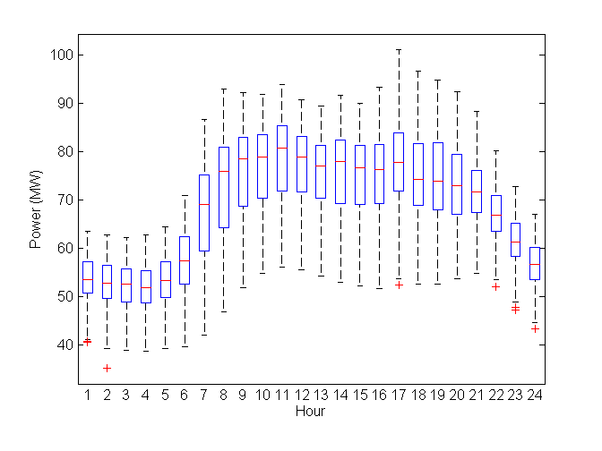
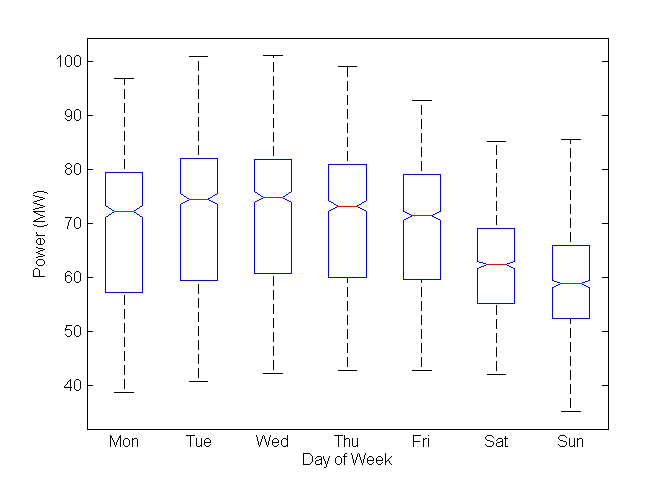
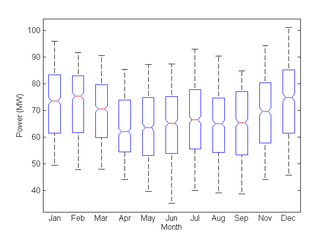
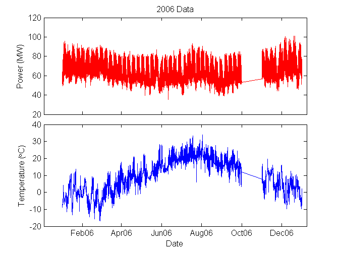
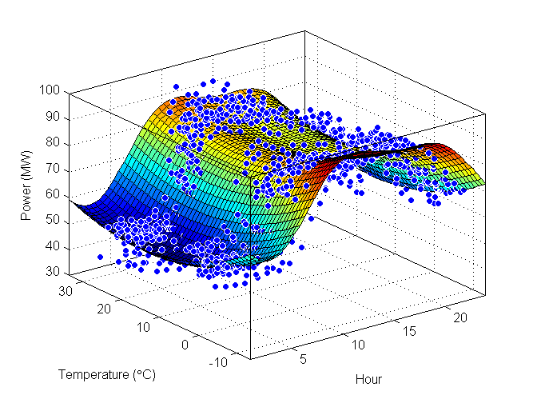

Energy Forecast Demo
This demo showcases visualization and analysis for forecasting energy demand based on historical data. We have access to hour-by-hour utility usage for the year 2006, including information on the day of the week and the ambient temperature. Using this information, we will come up with a model for forecasting future energy demands based on parameters such as temperature and time of day.
Contents
Import
The first step in our process is to import the data from the Excel file.
clear;
importExcelData('2006Data.xls');
Initial Exploration of Data
We can get great insights just by doing quick visualization of the data that we brought in. For example, we can look at the power as a function of the time of day. Let's use a boxplot to look at it.
Power vs. Hour
boxplot(Power, Hour); xlabel('Hour'); ylabel('Power (MW)');
We can do the same for the other time scales.
Power vs. Day of Week
We can see that Saturday and Sunday have visibly lower power usage compared to weekdays.
dayText = {'Mon', 'Tue', 'Wed', 'Thu', 'Fri', 'Sat', 'Sun'};
boxplot(Power, DayOfWeek, ...
'notch', 'on', 'labels', dayText(unique(DayOfWeek)));
xlabel('Day of Week'); ylabel('Power (MW)');
 Power vs. Month
We see some seasonal effects by looking month by month. In general colder months use more power to heat the homes, but we also see some increase during hotter months, suggesting the use of electricity for air conditioning.
monthText = {'Jan', 'Feb', 'Mar', 'Apr', 'May', 'Jun', 'Jul', ...
'Aug', 'Sep', 'Oct', 'Nov', 'Dec'};
boxplot(Power, Month, ...
'notch', 'on', 'labels', monthText(unique(Month)));
xlabel('Month'); ylabel('Power (MW)');
 Custom Visualization
Another way to look at this is to plot the data as a single time series data. In order to do that, we will first construct a serial date for each of the data points.
serialTime = datenum(2006, Month, Day, Hour, 0, 0);
Now, we can visualize all of the data points versus time. We'll also plot Temperature versus time.
createPowerTempPlot(serialTime, Power, Temp)
If we zoom in, we see the daily effect, as well as weekly, and monthly effects. We can see that weekends clearly behaves differently than weekdays, based on the cyclical behavior that seems to have a period of 7 days.
We also see that there is a large variation in temperature throughout the year. We suspect that temperature is responsible for the long-term effect, while the time of day is responsible for the short-term effect.
Surface Fitting
Based on this, we will express Power as a function of Temperature and Hour.
Rather than using all of the data sets, we will pick out a subset of the data for fitting. Since weekdays and weekends behave differently, we will look at them separately. Also, to get a wide range of temperatures, we will select one cold month (January) and one warm month (July)
First, let's extract out the weekdays for January and July. To remind ourselves, the day of the week is coded this way:
- Monday = 1
- Tuesday = 2
- Wednesday = 3
- Thursday = 4
- Friday = 5
- Saturday = 6
- Sunday = 7
Based on this, we can get the indicies of all the weekdays AND all the January and July data.
weekdays = DayOfWeek < 6; interestingMonths = ismember(Month, [1 7]); idx = weekdays & interestingMonths;
We can use this result to extract out the Hour, Temperature, and Power data for the desired points
thisHour = Hour(idx); thisTemp = Temp(idx); thisPower = Power(idx);
We will fit the data to this equation:
a0 + a1*cos(w*t) + b1*sin(w*t) + a2*cos(2*w*t) + b2*sin(2*w*t) +
c1*y^2 + c2*ywhere t is hours and y is temperature.
(The following function is an auto-generated MATLAB file)
[model, goodness] = createHourTempPowerSurfaceFit(thisHour, thisTemp, thisPower) %#ok
General model:
model(x,y) = a0 + a1*cos(w*x) + b1*sin(w*x) + a2*cos(2*w*x) + b2*sin(2*w*x)
+ c1*y^2 + c2*y
Coefficients (with 95% confidence bounds):
a0 = 74.25 (73.69, 74.8)
a1 = -11.71 (-12.54, -10.89)
a2 = 0.4612 (-0.2847, 1.207)
b1 = -8.937 (-9.69, -8.183)
b2 = -5.566 (-6.094, -5.037)
c1 = 0.02015 (0.0165, 0.02381)
c2 = -0.6394 (-0.719, -0.5598)
w = 0.2665 (0.262, 0.271)
goodness =
sse: 33362
rsquare: 0.80627
dfe: 1024
adjrsquare: 0.80494
rmse: 5.7079
 The graph above shows the surface fit based on the data points. The function also returns an object which can be used to make predictions.
For instance, we can look at the demand at noon when the temperature outside is -5 deg C.
model(12, -5)
ans =
89.98
The 95% confidence intervals of the predicted demand is
predint(model, [12, -5])
ans =
78.738 101.22
Conclusion
We have modeled the power usage as a function of the time of day and the outside temperature. While this may not be the best fit for the data, we have developed a routine that could be used to create better fits or analyze different data sets.